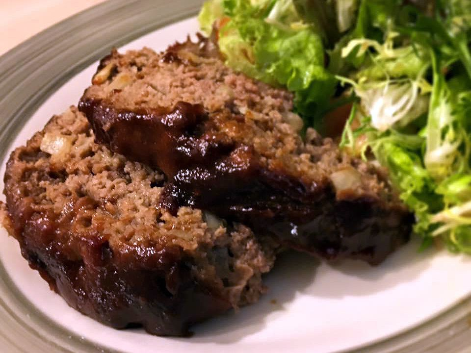

Glazed Meatloaf

Description
This is a succulent glazed meatloaf with a sweet and sour sauce that
everyone will enjoy.
Ingredients
- 1/2 cup ketchup
- 1/3 cup brown sugar
- 1/4 cup lemon juice, divided
- 1 teaspoon mustard powder
- 2 pounds ground beef
- 3 slices bread, broken up into small pieces
- 1/4 cup chopped onion
- 1 large egg, beaten
- 1 teaspoon beef bouillon granules
Steps
- Preheat the oven to 350 degrees F (175 degrees C).
- Combine ketchup, brown sugar, 1 tablespoon lemon juice, and mustard
powder in a small bowl.
- Combine ground beef, bread, onion, egg, bouillon, and remaining
lemon juice in a separate large bowl. Add in 1/3 of the ketchup
mixture from the small bowl. Mix well and place in a 5x9-inch loaf pan.
- Bake in the preheated oven for 1 hour. Drain any excess fat, coat
with remaining ketchup mixture, and bake for 10 more minutes.